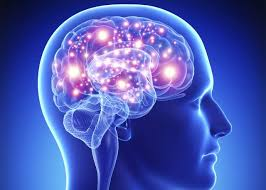

मस्तिष्क

मस्तिष्क अधिकांश जीव जंतुओं के शरीर का आवश्यक अंग हैं। इस लेख में मानव शरीर से संबंधित उल्लेख है। प्राणी जगत् में मनुष्य का मस्तिष्क सर्वाधिक विकसित होता है। वयस्क मनुष्य में इसका भार लगभग 1350 से 1400 ग्राम होता है। यह खोपड़ी की कपालगुहा में सुरक्षित रहता है। कपाल गुहा का आयतन 1200 से 1500 घन सेंटीमीटर होता है। मस्तिष्क के चारों ओर दो झिल्लियाँ पाई जाती हैं। बाहरी झिल्ली को दृढ़तानिका और भीतरी झिल्ली को मृदुतानिका कहते हैं। दोनों झिल्लियों के मध्य प्रमस्तिष्क मेरुद्रव्य भरा रहता है। यह मस्तिष्क की चोट, झटकों आदि से रक्षा करता है। मस्तिष्क का निर्माण तन्त्रिका कोशिकाओं तथा न्यूरोग्लियल कोशिकाओं के द्वारा होता है।
- मानव मस्तिष्क के भाग
मानव मस्तिष्क के तीन भाग होते हैं-
- अग्र मस्तिष्क
- मध्य मस्तिष्क
- पश्च मस्तिष्क
अग्र मस्तिशक
इसे प्रोसेनसिफेलोन कहते हैं। इसके दो भाग होते हैं-
- प्रमस्तिष्क
- अग्रमस्तिष्क पश्च
प्रमस्तिष्क
यह मस्तिष्क का 2/3 भाग बनाता है। यह अनुलम्ब बिदर द्वारा दाएँ तथा बाएँ प्रमस्तिष्क गोलार्द्धों में बँटा रहता है। प्रत्येक प्रमस्तिष्क गोलार्द्ध की समूची सतह अनेकों भंजों में वलित होती है। प्रमस्तिष्क के बाहरी भाग कार्टेक्स में तन्त्रिका कोशिकाओं के कोशिकाकाय तथा इनके डेन्ड्राइट्स स्थित होते हैं। भीतर के श्वेत द्रव्य में तन्त्रिका कोशिकाओं के एक्सॉन स्थित होते हैं।
- कार्य
प्रमस्तिष्क में कई केन्द्र होते हैं। शरीर की विभिन्न क्रियाएँ इन्हीं केन्द्रों पर आश्रित रहती हैं। जैसे- हृदय गति, भोजन ग्रहण करना, साँस लेना, प्रमस्तिष्क द्वारा संचालित क्रियाएँ हैं। प्रमस्तिष्क ही घृणा, प्रेम हर्ष, विषाद, दुःख, भय आदि संवेगों की उत्पत्ति का केन्द्र है।
अग्रमस्तिष्क पश्च या डाइएनोसैफेलोन
यह अग्रमस्तिष्क का पश्च भाग होता है। इसका पृष्ठ भाग पतला एवं अधर भाग मोटा होता है। अग्रमस्तिष्क पश्च की भित्ति, थैलेमस, तथा हाइपोथैलेमस में विभेदित रहती है। हाइपोथैलेमस की अधर सतह से पीयूष ग्रन्थि लगी रहती है। अग्रमस्तिष्क पश्च की पृष्ठ सतह पर पीनियल काय स्थित होती है।
- कार्य
अग्रमस्तिष्क में डाइएनसिफेलोन उपापचय तथा जनन क्रिया, दृक पिण्ड दृष्टि ज्ञान का नियन्त्रण और नियमन करते हैं।
मध्य मस्तिष्क
इसे मीसेनसिफेलोन कहते हैं। यह मस्तिष्क का छोटा (लगभग 2.5 सेंटीमीटर) लम्बा संकुचित भाग होता है। इस भाग में दृक तन्त्रिकाएँ परस्पर क्रॉस करके आप्टिक कियाज्मा बनाती हैं।
- कार्य
यह दृष्टि एवं श्रवण संवेदनाओं को प्रमस्तिष्क तक पहुँचाने का कार्य करता है।
पश्च मस्तिष्क
पश्च मस्तिशक को 'रॉम्बेनसिफैलॉन' भी कहते हैं। यह मस्तिष्क का सबसे पिछला भाग होता है। इसे मस्तिष्क वृन्तभी कहते हैं। इसमें तीन भाग होते हैं-
अनुमस्तिष्क या सेरीबेलम
यह प्रमस्तिष्क के पश्च भाग से सटा रहता है। यह तितली की आकृति का होता है। इसके दाएँ तथा बाएँ दो फूले हुए अनुमस्तिष्क गोलार्द्ध होते हैं जो वर्मिस नामक सँकरे दण्डनुमा मध्यवर्ती रचना से जुड़े रहते हैं। प्रत्येक अनुमस्तिष्क गोलार्द्ध अपनी ओर के प्रमस्तिष्क गोलार्द्ध की अनुकपालीय पाली से एक गहरी अनुप्रस्थ खाँच के द्वारा पृथक् रहता है। अनुमस्तिष्क में भी बाहरी धूसर द्रव्य तथा भीतरी श्वेत द्रव्य होता है। श्वेत द्रव्य जगह–जगह धूसर द्रव्य में प्रवेश करके वृक्ष की शाखाओं के सदृश रचना बनाता है, जिसे प्राणवृक्ष या आरबर विटी कहते हैं।
- कार्य
यह शरीर में होने वाली सभी प्रकार की शारीरिक गतियों का संचालन करता है।
पोन्स वेरोलाई
अनुमस्तिष्क में गुहा का अभाव होता है। अनुमस्तिष्क के अधर भाग में श्वेत द्रव्य की एक पट्टी होती है। जिसे पोन्स वेरोलाई कहते हैं। यह दोनों मनुमस्तिष्क गोलार्द्धों को जोड़ती है।
- कार्य
यह शरीर के दोनों पार्श्वों की गतियों का समन्वयन करती है।
मस्तिष्क पुच्छ या मैड्यूला आब्लांगेटा
यह मस्तिष्क का सबसे पिछला भाग होता है। यह आगे मेरुरज्जु के रूप में कपाल गुहा से बाहर निकलता है। इसका अगला भाग चौड़ा होता है जो पीछे की ओर पतला होकर मेरुरज्जु बनाता है। इसकी पार्श्व दीवारें मोटी तथा तन्त्रिका पथों की बनी होती हैं। मुस्तिष्क पुच्छ की पृष्ठभूमि पर पश्च रक्तक जालक स्थित होता है।
- कार्य
यह शरीर की अनैच्छिक क्रियाओं, हृदय की धड़कन, श्वसन गतियाँ, भोजन को निगलना, आहारनाल की गतियों आदि का नियंत्रण करता है।